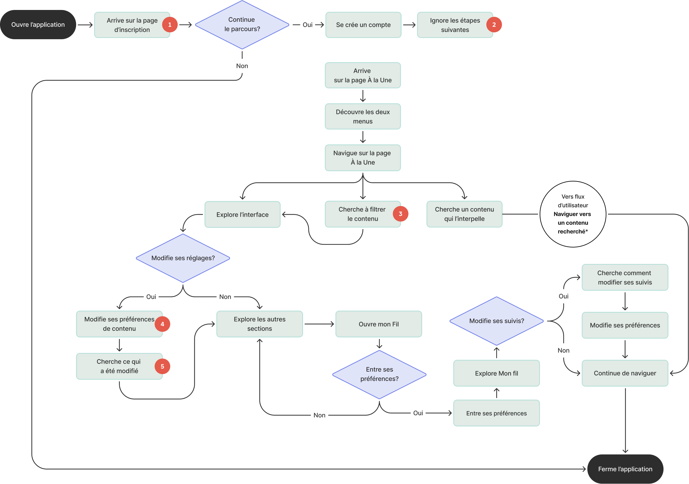
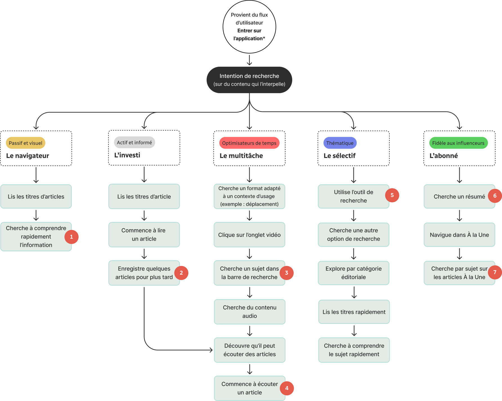
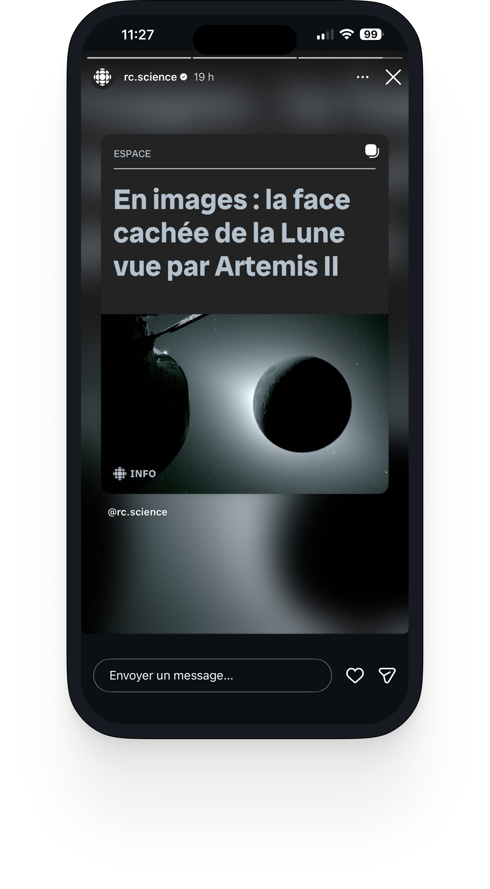
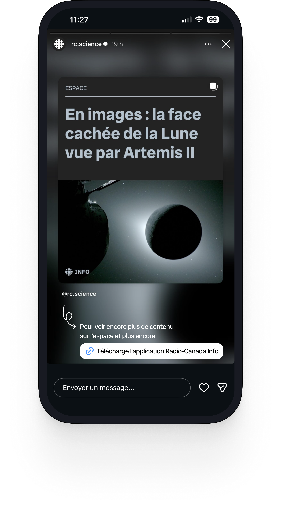
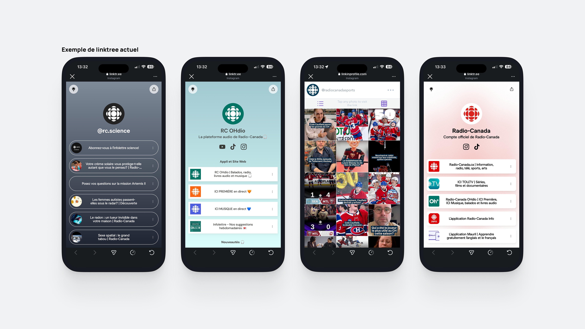
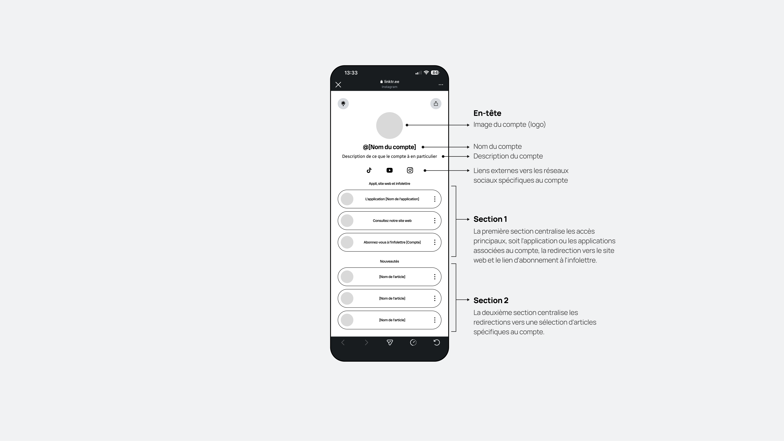
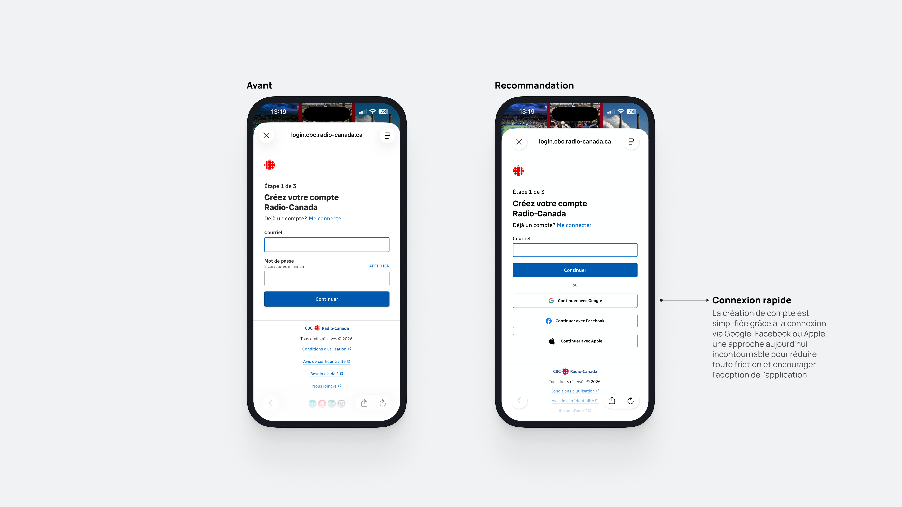
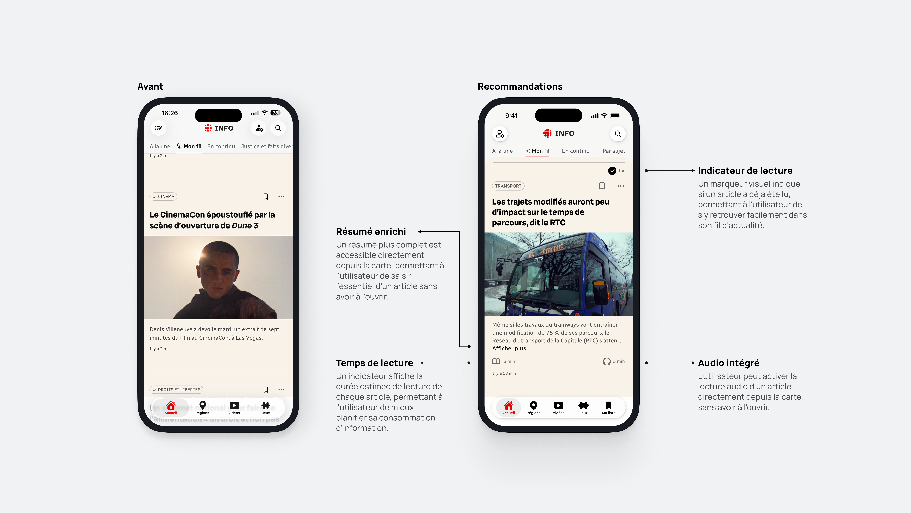
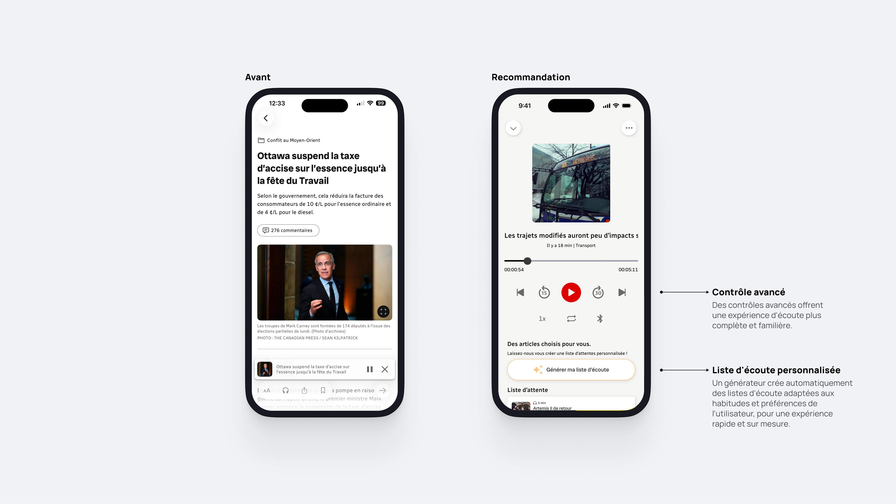

Projet réalisé en tant que consultant pour Radio-Canada dans le cadre d'un cours à la maîtrise en design d'interaction de l'Université Laval.
Mise en contexte
Ce projet a été réalisé en collaboration avec Radio-Canada. L'objectif était d'agir comme consultant externe en choisissant, avec leur équipe, un mandat et une problématique sur lesquels se pencher.
Mandat
Comprendre la relation à l'actualité des jeunes adultes à travers leurs usages des plateformes tierces, notamment les médias sociaux, en comparaison avec les applications numériques de Radio-Canada et identifier des leviers pour favoriser la redirection vers l'application de Radio-Canada Info.
Objectifs
Explorer la transition
Identifier ce qui attire les jeunes adultes sur d'autres plateformes pour mieux les amener vers celles de Radio-Canada.
Favoriser la bascule numérique
Trouver comment rendre les contenus de Radio-Canada plus accessibles et adaptés aux jeunes adultes.
Optimiser l'expérience
Optimiser l'expérience utilisateur et les passerelles dans le parcours d'accès à l'actualité vers les plateformes numériques de Radio-Canada.
Problématique
Dans le contexte d'abondance informationnelle et de transformation des pratiques médiatiques, plusieurs jeunes se détournent des plateformes d'information traditionnelles, comme les applications de Radio-Canada, au profit de formats perçus comme plus accessibles et rapides.
Écosystème
Produits et services
Concurrence
Méthode de recherche
Entretiens semi-dirigés
Méthode d'entrevue ouverte utilisée pour l'obtention de données riches, nuancées et contextuelles.
Tests utilisateurs
Méthode d'observation qualitative de l'application R-C Info actuelle, réalisée après l'entretien semi-dirigé.
Analyse de contenu
Méthode d'auto-observation qualitative fondée sur l'analyse de contenu de l'app RC-Info et des médias sociaux.
Sondage
Méthode quantitative par questionnaire en ligne auprès d'un échantillon représentatif de jeunes adultes.
Analyse de la concurrence
Méthodes combinées d'analyses (comparative, contenu et observation) des plateformes concurrentes.
Constats et statistiques
*Chaque constat et statistique proviennent directement des méthodes de recherche énoncées plus tôt.
Moments d'usage
Les moments de mobilité et d'attente représentent des opportunités pour l'accès à l'information, puisque plusieurs jeunes adultes profitent de ces moments pour s'informer ou se divertir.
74 %
des répondant·e·s mentionnent avoir l'habitude de faire autre chose en même temps de consulter l'actualité.
46 %
des répondant·e·s mentionnent se déplacer lorsqu'ils consultent de l'actualité en multitâche.
Habitudes
Les habitudes de consommation numérique des jeunes adultes sont fortement ancrées dans leur utilisation quotidienne des réseaux sociaux et difficiles à modifier, mais une majorité des jeunes adultes interrogés se dit ouverte à l'ajout d'une application d'actualité dédiée.
60 %
des répondant·e·s indiquent sauvegarder du contenu pour consulter plus tard sur Instagram ou TikTok, démontrant un intérêt pour les fonctions d'enregistrement.
Effort perçu de la connexion
La création de compte est perçue comme un frein important pour la majorité des jeunes adultes, ce qui peut nuire à l'acquisition de nouveaux utilisateurs.
75 %
des répondant·e·s considèrent que la création d'un compte constitue un frein majeur de la bascule des réseaux sociaux vers une application.
Formats
Les formats courts, particulièrement vidéo et audio, sont les plus appréciés, notamment en situation de multitâche ou de déplacement, et les carrousels concis et explicatifs suscitent également un intérêt marqué.
40 %
des répondant·e·s préfèrent les résumés écrits et visuels pour consulter du contenu d'actualité.
40 %
des répondant·e·s apprécient le format balado pour consommer du contenu en ligne.
65 %
des répondant·e·s mentionnent préférer les articles courts lorsqu'il s'agit de lecture.
Repères visuels
Certains indicateurs visuels et fonctionnalités renforcent la consommation rapide de l'information et soutiennent les habitudes des jeunes adultes, qui apprécient avoir un sentiment de contrôle sur les contenus proposés.
86 %
des répondant·e·s considèrent que le sujet ou le thème du contenu sont des critères de filtrage importants.
Personas
Le navigateur
Passif, s'informe en scrollant et actif sur les médias sociaux
Jeune adulte qui découvre l'actualité en scrollant sur TikTok, Instagram ou Facebook sans la chercher. Consomme des formats très courts et visuels, surtout entre deux moments de divertissement, par exemple dans les files d'attente, les transports ou avant de dormir.
L'investi
Engagé et très intéressé à l'actualité
Jeune adulte qui consulte une ou plusieurs sources crédibles par jour ou à différents moments de la journée, auxquelles s'ajoute quelques plateformes sociales. Privilégie des formats courts et mobiles, avec la possibilité d'approfondir selon ses besoins.
Le multitâche
Productif, veut rentabiliser son temps et optimiser ses déplacements
Jeune adulte qui s'informe en mouvement grâce aux balados, résumés ou capsules YouTube. Privilégie les contenus courts et audio qu'il peut consommer en parallèle d'autres tâches du quotidien, comme par exemple en se préparant, en cuisinant ou en faisant du ménage.
Le sélectif
Engagé dans les sujets d'intérêts personnels
Jeune adulte qui consulte du contenu par affinités thématiques (ex. : pop culture, musique, sports). S'intéresse peu à l'actualité traditionnelle et reçoit les nouvelles par son entourage ou lorsqu'elles deviennent virales. Il privilégie les contenus simples et rapides.
L'abonné
Fidèle aux info influenceurs et aux médias sociaux
Jeune adulte qui s'informe surtout via les info influenceurs suivis sur Instagram, TikTok ou YouTube. Recherche l'actualité et préfère les vidéos explicatives et résumés de plateformes variées aux médias traditionnels pour suivre l'actualité locale et internationale.
Parcours utilisateurs
Parcours 1
Installer l'application
Parcours d'un utilisateur exposé à du contenu Radio-Canada sur Instagram, de la découverte initiale jusqu'à l'accès à l'application Radio-Canada Info.
Constats et frictions identifiés
Les stories servent uniquement à rediriger vers la publication, sans autre option de bascule.
Aucune option de bascule n'est mise de l'avant.
La seule redirection disponible se trouve à la fin du carrousel.
Aucun lien externe vers l'App Store n'est présent.
L'utilisateur doit rechercher l'application par lui-même, sans raccourci disponible.
Parcours 2
Entrer sur l'application
Parcours de l'utilisateur, de l'ouverture de l'application Radio-Canada Info à la découverte et à la navigation générale.
Frictions identifiées
Inscription perçue comme une friction d'entrée à contourner
Création de compte jugée longue
Défilement horizontal des catégories peu visible et non remarqué
Deux entrées distinctes pour les réglages
Modifications apportées difficiles à comprendre immédiatement

Parcours 3
Naviguer vers un contenu recherché
Parcours ciblé de navigation vers du contenu recherché, adapté à différents profils utilisateurs, qui peuvent partager des besoins communs et se recouper.
Frictions identifiées
Options de résumé et de vulgarisation limitées pour une compréhension rapide
Contenus enregistrés difficiles à retrouver et indisponibles pour En bref et les vidéos
Absence de recherche spécifique par format
Offre audio peu engageante, limitée à l'écoute d'articles longs à des fins d'accessibilité
Exploration via la recherche peu efficace pour certains sujets
Absence de résumé rapidement accessible pour une vue d'ensemble de l'actualité
Sujet peu mis en évidence dans la hiérarchie de À la Une, préférence pour la présentation de Mon fil

Opportunités de design
Frictions à l'entrée
Explorer les freins à l'entrée de l'application Radio-Canada Info pour optimiser l'adoption et intégrer l'information aux routines des jeunes adultes.
Usage et métadonnées
Uniformiser la présentation des métadonnées visibles et rapprocher l'expérience des codes et usages des médias sociaux.
Formats adaptés
Renforcer l'attractivité et la valeur perçue de l'application Radio-Canada Info afin de soutenir l'engagement initial et favoriser un usage récurrent chez le public cible.
Recommandations
Plusieurs recommandations ont été formulées pour répondre au mandat initial de Radio-Canada. Elles se structurent en trois catégories. Premièrement, il est question d'améliorer la redirection depuis les réseaux sociaux vers l'application. Deuxièmement, de réduire les frictions lors de la création de compte. Finalement, des pistes de solutions pour l'ajout de repères et de fonctionnalités adaptés aux habitudes des jeunes adultes.
Utilisation des fonctionnalités natives des applications
L'utilisation des fonctionnalités natives des réseaux sociaux est pertinente dans une situation comme celle de Radio-Canada, car elle permet de renvoyer rapidement l'utilisateur vers la plateforme officielle en réduisant au maximum l'effort demandé et donc de créer un meilleur taux de conversion.
Avant

Après

Accès rapide
Un lien externe direct permet de télécharger l'application en un instant, sans friction, dans le but de réduire l'effort perçu.
Uniformisation des linktrees
L'uniformisation des Linktree semblait essentielle. Elle a pour but d'offrir les mêmes attentes à l'utilisateur, peu importe le compte Radio-Canada qu'il consulte, tout en s'assurant que les redirections vers les plateformes externes de l'organisation sont présentes et mises en valeur.


Connexion rapide
La connexion a été observée comme un frein clair pour les nouveaux utilisateurs. Rendre cette étape moins lourde et plus rapide représente un potentiel énorme pour améliorer le taux de conversion.

Ajout d'indicateurs
Les jeunes adultes sont conscients du temps limité qu'ils vont passer sur une application d'actualité. Certains indicateurs proposés peuvent permettre à l'utilisateur de s'ajuster selon le temps qu'il est prêt à investir dans la lecture d'articles, selon le niveau de profondeur qu'il souhaite atteindre et ses préférences de consultation.

Mode audio augmenté
Le format audio a été observé comme très populaire chez les jeunes adultes. Il s'adapte bien à leurs habitudes multitâches, que ce soit lors de leurs déplacements, en cuisinant ou pendant des tâches ménagères. Un mode audio plus développé et complet peut représenter une bonne porte d'entrée pour rejoindre une nouvelle clientèle qui n'est pas encore présente sur l'application.

Ajustement des barres de navigation
Deux enjeux sont ressortis de nos recherches utilisateurs.
Premièrement, le menu du haut, présentement défilant horizontalement, n'était pas automatiquement compris par les nouveaux utilisateurs. Ces derniers trouvaient le défilement long et la fonction pour réarranger les sections peu intuitive.
Deuxièmement, la barre de navigation du bas manquait certaines options appréciées et utiles pour les utilisateurs, comme le mode jeu, qui était auparavant mélangé avec les modes de consultation de l'actualité en haut, et la fonction d'enregistrement des nouvelles, qui se trouvait à un niveau de navigation trop profond.